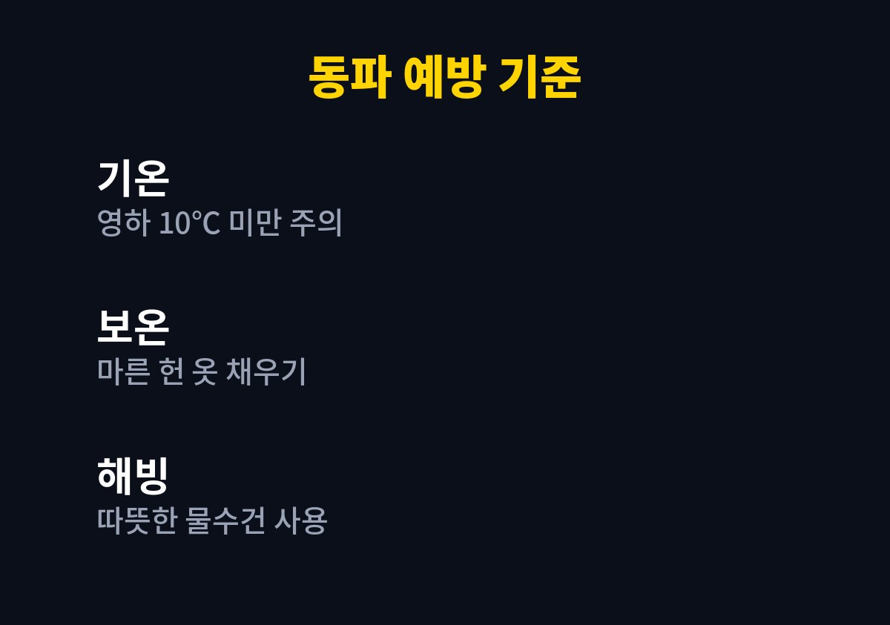
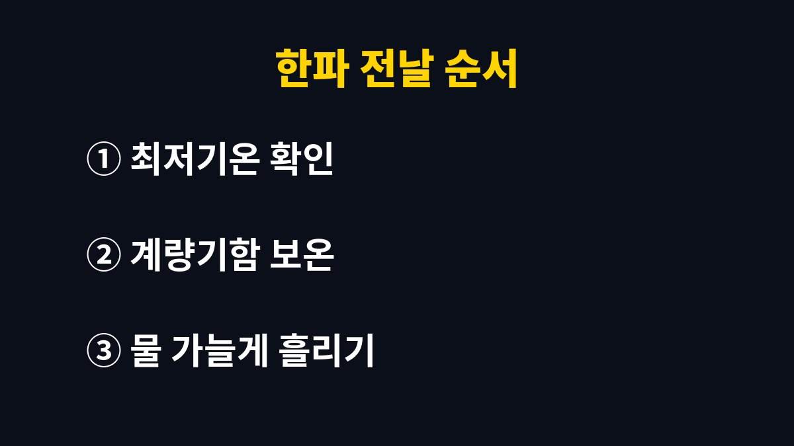

이 글은 한파 예보가 나올 때마다 수도가 얼까 봐 마음이 쓰이는 사람을 위해 쓴 글이다.
2026년 11월 기준으로 서울시 상수도사업본부가 겨울마다 안내해 온 동파 예방 요령과 우리 집에서 해 본 준비를 정리했다.
계량기는 평소 열어 볼 일이 없어서 얼고 나서야 존재를 알게 되는 경우가 많다.
아이 둘을 씻기고 등원 준비를 해야 하는 아침에 물이 나오지 않으면 그날 일정이 통째로 흔들린다.
나는 주변에서 계량기가 얼어 고생했다는 이야기를 듣고 처음으로 우리 집 계량기함을 열어 봤다.
안을 보니 보온 상태가 생각보다 허술했고 뚜껑 틈으로 찬 공기가 드나들고 있었다.
계량기함이 복도나 마당처럼 바깥 공기에 닿는 곳에 있으면 찬 공기의 영향을 더 받는다.
집을 오래 비우는 날에는 관 안의 물이 멈춰 있어 얼기 쉬운 조건이 된다.
그래서 한파가 오기 전에 미리 손을 보는 것이 가장 덜 번거로운 방법이라고 판단했다.
서울시 상수도사업본부 자료에 따르면 보온을 해도 영하 10℃ 미만인 날이 이어질 때 동파가 많이 생기고, 영하 15℃ 미만으로 떨어지면 크게 늘어났다.
서울시는 일 최저기온에 따라 관심, 주의, 경계, 심각의 4단계 동파 예보제를 운영해 왔다.
나는 겨울 동안 일기예보에서 다음 날 최저기온을 확인하는 습관부터 들였다.
서울시 안내는 한파가 이어지거나 오래 외출할 때 욕조 수도꼭지를 조금 열어 물을 실처럼 가늘게 흘리라고 한다.
기준은 200㎖ 우유팩을 26초 안에 채우는 정도로 제시돼 있다.
흘린 물은 받아 두었다가 청소나 변기 물로 쓰면 아깝다는 마음이 덜하다.
| 상황 | 공식 안내 | 우리 집 실천 |
|---|---|---|
| 한파 전 | 계량기함을 헌 옷 등 보온재로 채우기 | 마른 헌 옷으로 교체 |
| 영하 10℃ 미만·외출 | 수돗물을 실처럼 가늘게 흘리기 | 욕조에 받아 재사용 |
| 계량기가 얼었을 때 | 따뜻한 물수건으로 천천히 녹이기 | 화기는 쓰지 않음 |
| 동파 의심 | 서울은 다산콜센터 120 또는 수도사업소 신고 | 번호를 냉장고에 붙임 |

서울시 안내는 계량기함 안 보온재가 습기로 젖었거나 파손됐다면 젖지 않은 새 보온재로 바꾸라고 한다.
젖은 보온재는 오히려 얼어붙을 위험이 있기 때문이다.
나는 아이들이 작아져서 못 입는 니트와 솜 조끼를 모아 계량기함을 빈틈없이 채웠다.
보온재를 넣은 뒤에는 뚜껑 쪽을 보온재로 덮고 비닐로 넓게 감싸 찬 공기가 들어오지 않게 했다.
이 방법은 서울시가 오래전부터 안내해 온 보온 요령과 같다.
막상 해 보니 작업 자체는 생각보다 금방 끝났다.
서울시는 계량기가 얼었을 때 토치나 헤어드라이어 같은 화기를 쓰면 화재가 날 수 있다고 안내한다.
50℃ 이상 뜨거운 물도 계량기가 파손될 위험이 있어 쓰지 말라고 한다.
그래서 따뜻한 물수건으로 계량기와 수도관 주위를 골고루 녹이는 방법을 가족에게도 알려 두었다.
한파 예보를 보면 아래 순서대로 점검한다.
계량기 유리가 깨지거나 부풀어 있다면 직접 손대지 말고 신고하는 편이 낫다.

동파는 한번 생기면 수리를 기다리는 동안 생활이 멈춘다.
계량기함 보온과 물 흘리기만 챙겨도 한파 예보를 볼 때 마음이 훨씬 편해졌다.
지역마다 신고 번호와 예보 방식이 다를 수 있으니 우리 동네 수도사업소 안내도 한 번 확인해 두길 권한다.
다음 글에서는 겨울철 난방비를 줄이려고 보일러 설정을 바꿔 본 경험을 정리할 예정이다.
※ 2026년 기준 공공기관 안내와 개인 경험을 바탕으로 정리한 글이며, 집 구조와 제품에 따라 결과가 다를 수 있어 제품 설명서를 함께 확인하길 바란다.